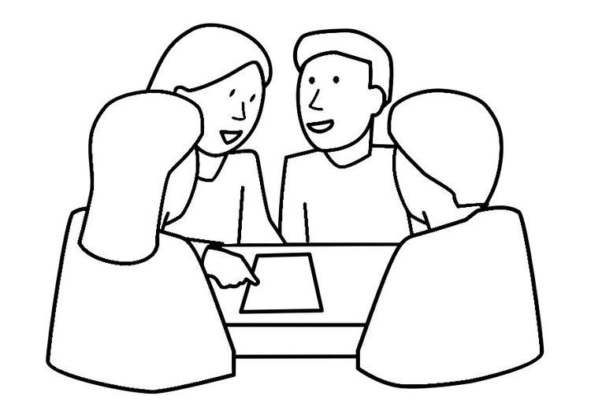

Planificación del Curso: Unidad I y III
En la Unidad se tratarán temas sobre el desarrollo del conocimiento científico, para el cual se abordarán los autores, Kusch que trata el tema Cultura, acompañada de los conocimientos, valores y las concepciones que vamos adquiriendo cuando formamos parte de desminada sociedad.
Descartes como filósofo representante del pensamiento moderno, el cual desarrolla la duda metódica para establecer una verdad absoluta. Con el surgimiento racionalismo europeo en el marco que surge la ciencia moderna; en relación con Kusch que visualiza otra concepción de conocimiento, que es propio de Nuestra América y no aquel saber impuesto con la conquista de América.
Se pondrá en discusión la importancia del conocimiento científico y los saberes de los pueblos originarios, quienes sostienen el saber a través de las generaciones.
El curso de segundo de bachillerato se centra en el problema de la identidad y el conocimiento de si mismo, en la actualidad; es importante reconocer nuestra identidad para un mejor relacionamiento con los/as otros/as y con el mundo. El ser es producto de un conocimiento de dualidad, cuando definimos algo estamos eliminando lo otro.
¿Es posible un mundo donde se conviva con ambas concepciones?
Tema: Cultura y conocimiento
Objetivos:
- Que los estudiantes entiendan qué significa el termino Cultura.
- Que puedan identificar las características de una persona culta.
- Que logren entender que existen diferentes culturas y no todas poseen las mismas creencias acerca del conocimiento.
Contenido:
Unidad I: Teoria del conocimiento
Video: I
Recursos didácticos: videos, ejercicios, actividades en Educaplay, pizarrón, classroom.
Estrategias: texto, ejercicios, la metodología que abordaremos es expositiva por el formato del curso al ser este virtual.